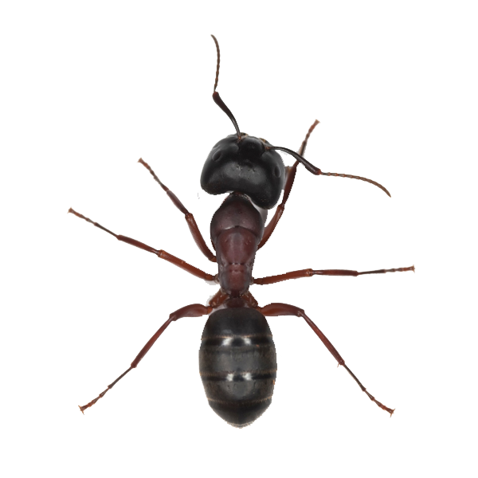
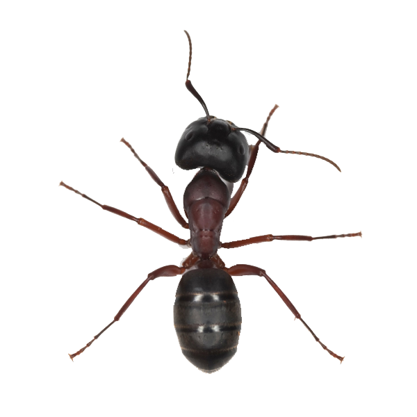

Keep Ants Out!
A guide to keep ants out of your home
 

Home
Ants are one of the most commonly found insects in homes, often making their way indoors in search of basic needs, like food, water, and shelter. The small size of an ant allows the to crawl through tiny openings and infiltrate households. This website will provide information on how to prevent and control ant infestations. Simple steps can be taken to both prevent an ant infestation from occurring and controlling a current infestation. Information for the prevention of an ant infestation can be found under the Prevention tab, and information for controlling an infestation can be found under the Infestation tab.